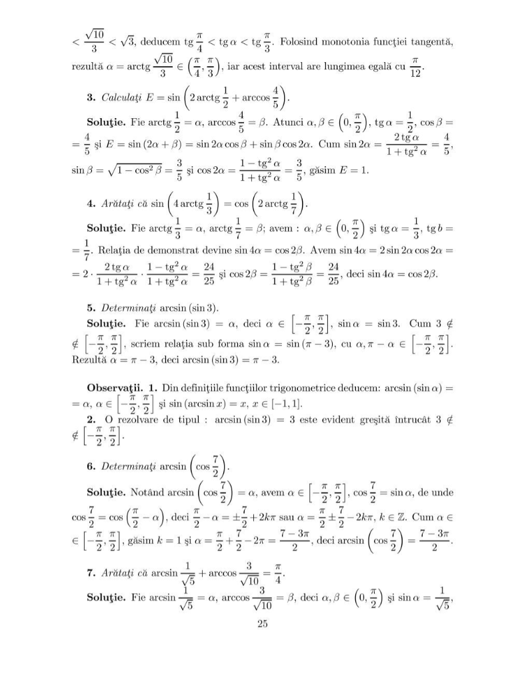
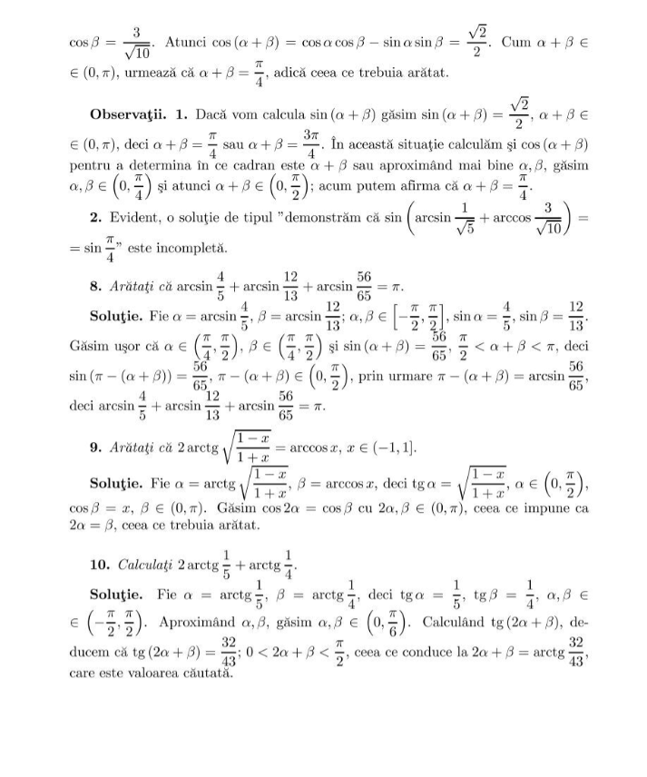

Functii Inverse
1.Funcția arcsin
Arcsin (abreviere pentru arcsinus) este o funcție trigonometrică inversă care calculează unghiul ale cărui sinus este egal cu o valoare dată. Este denumită și funcția inversă a sinului și este simbolizată cu sin^(-1) sau asin.
Definiția formală a arcsinului este următoarea: pentru orice valoare x din intervalul [-1, 1], arcsin(x) este unghiul α în intervalul [-π/2, π/2] pentru care sin(α) = x.
Cu alte cuvinte, arcsin(x) este unghiul ale cărui sinus este egal cu x. Rezultatul este exprimat în radiani.
Este important de menționat că funcția arcsin are un domeniu de definiție specific, și anume [-1, 1], deoarece sin(x) este definit doar în acest interval.
Funcția arcsin(x), denumită și sinus invers, este definită pe intervalul [-1, 1] și asociază fiecărui număr din acest interval un unghi al cărui sinus este egal cu acel număr. Proprietățile funcției arcsin(x) includ:
Domeniul de definiție: x aparține intervalului [-1, 1].
Codomeniul: Valorile rezultate sunt unghiuri, astfel încât codomeniul este intervalul [-π/2, π/2].
Funcția este impară: arcsin(-x) = -arcsin(x).
Funcția este inversa funcției sin(x): sin(arcsin(x)) = x pentru orice x din domeniul de definiție al arcsin(x).
2.Funcția arccos
Arccos (abreviere pentru arccosinus) este o funcție trigonometrică inversă care calculează unghiul ale cărui cosinus este egal cu o valoare dată. Este denumită și funcția inversă a cosinusului și este simbolizată cu cos^(-1) sau acos.
Definiția formală a arccosinusului este următoarea: pentru orice valoare x din intervalul [-1, 1], arccos(x) este unghiul α în intervalul [0, π] pentru care cos(α) = x.
Cu alte cuvinte, arccos(x) este unghiul ale cărui cosinus este egal cu x. Rezultatul este exprimat în radiani.
Este important de menționat că funcția arccos are un domeniu de definiție specific, și anume [-1, 1], deoarece cos(x) este definit doar în acest interval.
Funcția arccos(x), denumită și cosinus invers, are proprietăți similare funcției arcsin(x). Acestea includ:
Domeniul de definiție: x aparține intervalului [-1, 1].
Codomeniul: Valorile rezultate sunt unghiuri, astfel încât codomeniul este intervalul [0, π].
uncția este pară:F arccos(-x) = arccos(x).
Funcția este inversa funcției cos(x): cos(arccos(x)) = x pentru orice x din domeniul de definiție al arccos(x).
3.Funcția arctan
Arctan (abreviere pentru arctangentă) este o funcție trigonometrică inversă care calculează unghiul ale cărui tangenta este egală cu o valoare dată. Este denumită și funcția inversă a tangentei și este simbolizată cu tan^(-1) sau atan.
Definiția formală a arctangentei este următoarea: pentru orice valoare x, arctan(x) este unghiul α în intervalul (-π/2, π/2) pentru care tan(α) = x.
Cu alte cuvinte, arctan(x) este unghiul ale cărui tangenta este egală cu x. Rezultatul este exprimat în radiani.
Este important de menționat că funcția arctan nu are restricții de domeniu, ceea ce înseamnă că poate fi aplicată oricărei valori reale x.
Funcția arctg(x), denumită și tangentă inversă, are următoarele proprietăți:
Domeniul de definiție: x aparține întregul interval real (-∞, +∞).
Codomeniul: Valorile rezultate sunt unghiuri, astfel încât codomeniul este intervalul (-π/2, π/2).
Funcția este impară: arctg(-x) = -arctg(x).
Funcția este inversa funcției tg(x): tg(arctg(x)) = x pentru orice x din domeniul de definiție al arctg(x).
4.Funcția arcctg
Arcotangenta (arccotangenta) este o funcție trigonometrică inversă, notată ca "arccot(x)" sau "cot^(-1)(x)", care atribuie unghiurilor "y" în intervalul "[0, pi]" sau "(-pi, 0]" valorile corespunzătoare ale lui "x" în intervalul "(-infinit, infinit)".
Definiția sa matematică este dată de relația:
"arccot(x) = cot^(-1)(x) = tan^(-1)(1/x)"
Aceasta reprezintă unghiul "y" pentru care "x = cot(y)", unde "cot(y)" este funcția cotangentă, definită ca raportul dintre cateta adiacentă și cateta opusă a unui unghi într-un triunghi dreptunghic.
Funcția arccotangentă este periodică cu perioada "pi". Astfel, pentru orice "x", există infinite valori de "y" care satisfac relația "x = cot(y)". Intervalul specificat în definiție ("[0, pi]" sau "(-pi, 0]")
indică valoarea principală a arccotangentei, adică valoarea din intervalul respectiv pentru care "y" se află.
Funcția arccotangentă este utilizată într-o varietate de domenii matematice și științifice, inclusiv în geometrie, analiză matematică,
calcul numeric și teoria circuitelor electrice, pentru rezolvarea problemelor și expresiilor care implică relații trigonometrice inverse.
Funcția arcctg(x), denumită și cotangentă inversă, are proprietățile următoare:
Domeniul de definiție: x aparține întregul interval real (-∞, +∞).
Codomeniul: Valorile rezultate sunt unghiuri, astfel încât codomeniul este intervalul (0, π).
Funcția este impară: arcctg(-x) = -arcctg(x).
Funcția este inversa funcției ctg(x): ctg(arcctg(x)) = x pentru orice x din domeniul de definiție al arcctg(x).
5.Aplicatii
x

6.Aplicații în viața de zi cu zi
Funcțiile trigonometrice inverse și aplicațiile lor pot fi de ajutor într-o varietate de situații din viața de zi cu zi.Câteva exemple ar fi:
Găsirea unghiurilor: Funcțiile trigonometrice inverse, cum ar fi arcsin, arccos și arctan, sunt utilizate pentru a găsi unghiurile dintr-un triunghi.
Aceasta este utilă atunci când știm lungimile laturilor și vrem să determinăm valorile unghiurilor.
Calcularea distanțelor: În navigație sau în probleme legate de măsurători de teren, putem folosi funcțiile trigonometrice inverse pentru a calcula distanțe inaccesibile direct.
De exemplu, putem utiliza arctan pentru a determina înălțimea unui turn măsurând unghiul format între sol și vârful turnului și știind distanța de la punctul de observație la turn.
Proiectarea în construcții: Funcțiile trigonometrice inverse sunt utilizate în proiectarea și construcția clădirilor și structurilor.
Ele permit inginerilor să calculeze unghiuri și dimensiuni necesare pentru a crea structuri stabile și sigure.
Calcularea unghiurilor de lansare: În domeniul fizicii și al sporturilor care implică aruncări sau trageri, funcțiile trigonometrice inverse sunt utile pentru a calcula unghiurile optime de lansare.
De exemplu, în baschet, arcul de cerc al coșului și înălțimea la care se află coșul pot fi luate în considerare pentru a determina unghiul și forța necesare pentru a înscrie un coș.
Calcularea valorilor necunoscute: Funcțiile trigonometrice inverse sunt folosite pentru a găsi valori necunoscute în ecuații trigonometrice.
Ele pot fi aplicate în rezolvarea problemelor legate de electricitate, mecanică și alte domenii.
Procesarea semnalelor: În domeniul telecomunicațiilor și al procesării semnalelor, funcțiile trigonometrice inverse sunt folosite pentru a analiza și sintetiza semnale.
Ele ajută la determinarea frecvențelor și fazelor semnalelor și sunt utile în compresia și decompresia datelor.
Acestea sunt doar câteva exemple de utilizări ale funcțiilor trigonometrice inverse în viața de zi cu zi.
Aceste funcții și aplicațiile lor au un rol important în rezolvarea problemelor practice și în înțelegerea relațiilor geometrice și trigonometrice.